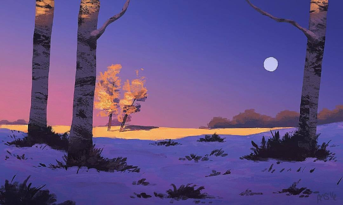

Original By: Aric Salyer
Simpler Winter, walks among the detailed yet simple energy and mood of a cold winter morning. The colors and light source allows the audience to notice how elements in nature change with the light. Throughout the day the same thing can transform and look diffrent during diffrent times of the day. Within that colors, time, temperature, and space changes.
